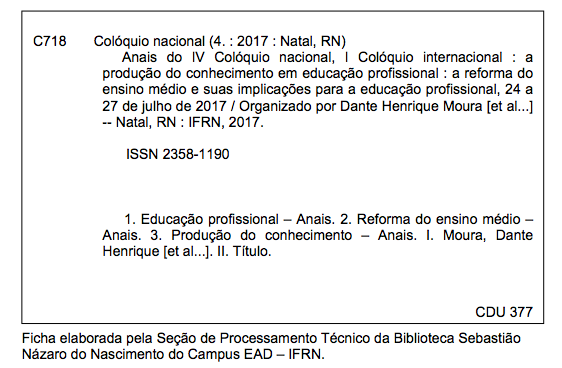

Ficha catalográfica

Como citar
IV COLÓQUIO NACIONAL, I COLÓQUIO INTERNACIONAL: A PRODUÇÃO DO CONHECIMENTO EM EDUCAÇÃO PROFISSIONAL, 4, 2017, Natal. Título da publicação (em itálico): subtítulo (se houver). Natal: IV Colóquio nacional, I Colóquio internacional: a produção do conhecimento em educação profissional, 2017. Disponível em: (inserir URL dos anais). Acesso em: dia, mês e ano.
Caderno de Resumos IV Colóquio
Trabalhos por Eixo
Eixo 1 – Políticas em Educação Profissional
| A ANÁLISE CRÍTICA DO PRONATEC A PARTIR DA EXPERIÊNCIA DO CURSO TÉCNICO EM INFORMÁTICA NO CAMPUS PINHEIRAL/IFRJ Maria Bernardes Vieira | Download |
| A CRIAÇÃO DO INSTITUTO FEDERAL DO AMAPÁ NO CONTEXTO DA EXPANSÃO DA REDE FEDERAL DE EDUCAÇÃO PROFISSIONAL E TECNOLÓGICA: RECONSTITUINDO TRAJETÓRIAS Crislaine Cassiano Drago, Dante Henrique Moura | Download |
| A EDUCAÇÃO PROFISSIONAL COMO POLÍTICA DE GOVERNO: A CRIAÇÃO DAS ESCOLAS DE ENSINO MÉDIO COM MODALIDADE PROFISSIONAL NO CEARÁ Jardel Pereira da Silva, Polliana de Luna Nunes Barreto e Zuleide Fernandes de Queiroz | Download |
| A EDUCAÇÃO PROFISSIONAL E A LEI Nº 13.415-2017 – UMA PONTE PARA O PASSADO Márcia Soares de Oliveira e Maria Adélia da Costa | Download |
| A EXPANSÃO DA REDE FEDERAL DE EDUCAÇÃO PROFISSIONAL E O ENEM: RESULTADOS DO IFRN – CAMPUS SANTA CRUZ Rosangela Araujo da Silva | Download |
| A FORMAÇÃO INTEGRAL E/OU PARA O MERCADO DE TRABALHO? PERCEPÇÕES DE DOCENTES E DISCENTES SOBRE ENSINO PROFISSIONALIZANTE NO INTERIOR DO CEARÁ Miqueias Miranda Vieira, Carlos Henrique Lopes Pinheiro e Mykaelly Morais Vieira | Download |
| A IMPOSSIBILIDADE DA CONSTRUÇÃO DA IDENTIDADE DOS INSTITUTOS FEDERAIS DE EDUCAÇÃO, CIÊNCIA E TECNOLOGIA SOB A ÉGIDE DA PEQUENA POLÍTICA Fernanda Paixão de Souza Gouveia e Katia Correia da Silva | Download |
| A INCLUSÃO DE PESSOAS COM DEFICIÊNCIA NA EDUCAÇÃO PROFISSIONAL NO SÉCULO XXI: O QUE DIZEM OS INDICADORES? Lourena Maria de Aquino Nogueira, Josanilda Mafra Rocha e Lenina Lopes Soares Silva | Download |
| A ORGANIZAÇÃO DA EDUCAÇÃO PROFISSIONAL INTEGRADA AO ENSINO MÉDIO NA REDE PÚBLICA ESTADUAL DE EDUCAÇÃO PROFISSIONAL DA BAHIA Ruy Jose Braga Duarte e Celi Nelza Zulke Taffarel | Download |
| A PERMANÊNCIA E ÊXITO NO IFMS: AÇÕES QUE SENSIBILIZAM A COMUNIDADE ACADÊMICA Tânia Mara Dias Gonçalves Brizueña e Glaucia Lima Vasconcelos | Download |
| A POLÍTICA DE INCLUSÃO DE PESSOAS COM DEFICIÊNCIA NA EDUCAÇÃO PROFISSIONAL DO INSTITUTO FEDERAL DE EDUCAÇÃO, CIÊNCIA E TECNOLOGIA DO RIO GRANDE DO NORTE Ligyanne Karla de Alencar | Download |
| A PRESENÇA DA DUALIDADE ESTRUTURAL NO ENSINO MÉDIO INTEGRADO À EDUCAÇÃO PROFISSIONAL TÉCNICA: UM ESTUDO DE CASO NO IFSUL/CAVG Viviane Aquino Zitzke, Patrícia Mendes Calixto e Rossane Vinhas Bigliardi | Download |
| A PRODUÇÃO CIENTÍFICA SOBRE AVALIAÇÃO DE POLÍTICAS EM EDUCAÇÃO PROFISSIONAL NA REVISTA DO SERVIÇO PÚBLICO Shilton Roque dos Santos, Fabiana Teixeira Marcelino e Márcio Adriano de Azevedo | Download |
| A QUALIDADE DA ESCOLA PÚBLICA A PARTIR DA OPINIÃO DOS JOVENS DO ENSINO MÉDIO Lucineide Inez da Silva Campos | Download |
| A SAÍDA NÃO É A IMAGEM ESPELHADA DE FICAR: RELATO DE EXPERIÊNCIA COM OS ESTUDANTES DO PROEJA DO CAMPUS SANTO ANTÔNIO DE PÁDUA, DO INSTITUTO FEDERAL FLUMINENSE Frederico Santiago Lima, Rafaela Moraes Cruz e Arthur Rezende da Silva | Download |
| A UTILIZAÇÃO DE IMAGENS COMO FORMA DE COMPREENDER A REALIDADE: UMA ANÁLISE DO IFPE A PARTIR DA IMAGEM DA ORGANIZAÇÃO COMO ARENA POLÍTICA Maria Isailma Barros Pereira | Download |
| ANÁLISE DAS AÇÕES AFIRMATIVAS DAS IDENTIDADES AFRO E INDÍGENAS E POLÍTICAS DE INCLUSÃO NO INSTITUTO FEDERAL BAIANO Vanessa Gomes Lopes Angelim, José Anselmo Simões Jambeiro e Kaline Jurema Jambeiro Rocha | Download |
| ARENA POLÍTICA DA EDUCAÇÃO PROFISSIONAL NA REFORMA DO ENSINO MÉDIO Caroline Stéphanie Campos Arimateia Campos Magalhães, Ricardo Rodrigues Magalhães e Dante Henrique Moura | Download |
| AVALIAÇÃO DA POLÍTICA DE EDUCAÇÃO PROFISSIONAL: UM ESTUDO OBJETIVO DOS IMPACTOS NO DESENVOLVIMENTO LOCAL Marcus Vinicius Duarte Sampaio e José Gomes Ferreira | Download |
| AVALIAÇÃO DE POLÍTICAS NO CONTEXTO DA EDUCAÇÃO PROFISSIONAL: UMA REVISÃO Fabiana Teixeira Marcelino, Shilton Roque dos Santos e Márcio Adriano de Azevedo | Download |
| COLÉGIO DOS EDUCANDOS ARTÍFICES: AS CRIANÇAS POBRES E A EDUCAÇÃO PROFISSIONAL NO SÉCULO XIX (FORTALEZA, 1856 – 1866) Ana Cristina Pereira Lima | Download |
| CURRÍCULO INTEGRADO E INCLUSÃO DE JOVENS E ADULTOS TRABALHADORES NA PERSPECTIVA DO PROEJA: ENTRE O PRESCRITO E O FEITO Fernanda Pereira da Silva e Yara Silvya Albuquerque Pires Barros | Download |
| CURRÍCULO INTEGRADO: O OPOSTO ENTRE O POSTO E O PROPOSTO Diana Sampaio Melo Pipolo | Download |
| CURSOS TÉCNICOS A DISTÂNCIA: UMA ANÁLISE DO PERFIL DE ALUNOS DOS CURSOS DO PROGRAMA PROFUNCIONÁRIO, OFERTADOS NO INSTITUTO FEDERAL DO ESPÍRITO SANTO Marize Lyra Silva Passos, Danielli Veiga Carneiro Sondermann e Mariana Biancucci Apolinário Barbosa | Download |
| EDUCAÇÃO E TRABALHO EM ARTICULAÇÃO COM O ENSINO MÉDIO NA EDUCAÇÃO PROFISSIONAL: UM ESTUDO ACERCA DA GARANTIA DESSES DIREITOS PARA OS JOVENS Adriana Aparecida de Souza e Dante Henrique Moura | Download |
| EDUCAÇÃO PROFISSIONAL COMO GARANTIA DO DIREITO À EDUCAÇÃO E AO TRABALHO PARA JOVENS NO ENSINO MÉDIO: NOTAS PRÉVIAS DE PESQUISA Yossonale Viana Alves e Márcio Adriano De Azevedo | Download |
| EDUCAÇÃO PROFISSIONAL E CONSELHO DE CLASSE: A PARTICIPAÇÃO COMO COMPONENTE NECESSÁRIO PARA A REALIZAÇÃO DA GESTÃO DEMOCRÁTICA Bernardino Galdino de Sena Neto, Maria Judivanda da Cunha e Andrezza Maria Batista do Nascimento Tavares | Download |
| EDUCAÇÃO PROFISSIONAL NA REDE ESTADUAL DE ENSINO DO RN: PROGRAMA BRASIL PROFISSIONALIZADO ENTRE O DITO E O FEITO Francisca Natália da Silva, Erika Roberta Silva de Lima e Lenina Lopes Soares Silva | Download |
| ENSINO MÉDIO INTEGRADO À EDUCAÇÃO PROFISSIONAL – EXPRESSÃO DAS CONTRADIÇÕES DA SOCIEDADE ADMINISTRADA NO CONTEXTO DA FORMAÇÃO EDUCACIONAL Adriana Alves da Silva, Antônia Abreu de Sousa e Jerciano Pinheiro Feijó | Download |
| ENSINO MÉDIO INTEGRADO E O CONCEITO DE ESCOLA UNITÁRIA DE GRAMSCI Katharine Ninive Pinto Silva | Download |
| ENSINO MÉDIO INTEGRADO: NOTAS CRÍTICAS SOBRE OS RUMOS DA TRAVESSIA (2007-2016) Emmanuel Felipe de Andrade Gameleira e Dante Henrique Moura | Download |
| ENSINO MÉDIO NO BRASIL E A FORMAÇÃO PARA O MUNDO DO TRABALHO Ana Cristina Batista e Olivia Morais de Medeiros Neta | Download |
| ENTRE O SER E O FAZER – FORMAÇÃO TÉCNICA EM VIGILÂNCIA EM SAÚDE NO ESTADO DO CEARÁ: UM OLHAR NA PERSPECTIVA DA GESTãO E DO ESTUDANTE-PROFISSIONAL Francisco Jadson Franco Moreira, Vanessa Alencar de Araújo e Daniel Silva Araújo | Download |
| FORMAÇÃO DE PROFESSORES PARA A EDUCAÇÃO PROFISSIONAL: O QUE APONTAM OS DISPOSITIVOS LEGAIS MAIS RECENTES (2015-2017) Edilza Alves Damascena, Ana Carolina Veras do Nascimento e Dante Henrique Moura | Download |
| FORMAÇÃO HUMANA INTEGRAL NOS DOCUMENTOS ORIENTADORES DO ENSINO MÉDIO E DA EDUCAÇÃO PROFISSIONAL Erika Roberta Silva de Lima, Francisca Natália da Silva e Lenina Lopes Soares Silva | Download |
| FORMAÇÃO PROFISSIONAL DOS TÉCNICOS EM ENFERMAGEM FRENTE A REFORMA DO ENSINO MÉDIO: TECNICISTA OU POLITÉCNICA? João Ramos e Maria Adélia da Costa | Download |
| GERENCIALISMO E AS POLÍTICAS EDUCACIONAIS NO ESPÍRITO SANTO Tatiana Gomes dos Santos Peterle e Marcelo Lima | Download |
| IDEOLOGIA EMPRESARIAL NAS ESCOLAS ESTADUAIS DE EDUCAÇÃO PROFISSIONAL CEARENSES: BREVE ESTUDO DA TESE Ana Carolina Veras do Nascimento, Dante Henrique Moura e Edilza Alves Damascena | Download |
| INICIATIVAS DA EDUCAÇÃO PROFISSIONAL EM SAÚDE NO BRASIL: CAMINHOS DOS ANOS 2000 Thais Paulo Teixeira Costa, Rafael Rodolfo Tomaz de Lima e Janete Lima de Castro | Download |
| JUVENTUDE E POLÍTICAS PÚBLICAS: O DESAFIO DO MUNDO DO TRABALHO NO PROGRAMA PROJOVEM ADOLESCENTE Sanielle Katarine Rolim de Oliveira e Andrezza Maria Batista do Nascimento Tavares | Download |
| O ENSINO PROFISSIONAL NA DEMANDA DO COMPLEXO PETROQUÍMICO DO RIO DE JANEIRO E A SUPOSTA NOVA CLASSE MÉDIA Anna Karla Rodrigues Freire | Download |
| O PROFUNCIONÁRIO: RESGATE HISTÓRICO E PRINCIPIOS LEGAIS INTEGRANTES DE UM PROCESSO DE VALORIZAÇÃO DOS PROFISSIONAIS DA EDUCAÇÃO Ana Luísa Fonseca e Ilane Ferreira Cavalcante | Download |
| OS ALUNOS DO PROEJA NO IFAP – CAMPUS MACAPÁ: PERFIL DOS ESTUDANTES DO CURSO TÉCNICO EM ALIMENTOS R. L. da Silva Ramos e Crislaine Drago | Download |
| PARCERIA PÚBLICO E PRIVADA NA EDUCAÇÃO: A PERCEPÇÃO DOS GESTORES SOBRE A FORMAÇÃO CIENTÍFICO-FILOSÓFICA DOS ESTUDANTES DE UMA ESCOLA ESTADUAL DE PERNAMBUCO Cybelle Dutra da Silva, Andrezza Maria Batista Nascimento Tavares e Gutemberg Lima da Silva | Download |
| POLÍTICAS DE EDUCAÇÃO PROFISSIONAL PARA PESSOAS COM DEFICIÊNCIA NO BRASIL CONSTANTES NA SETEC/MEC (2000-2015) Josanilda Mafra Rocha, Juliane Kelly de Figueiredo Freitas e Lenina Lopes Soares Silva | Download |
| POLÍTICAS DE EDUCAÇÃO PROFISSIONAL: ALGUMAS REFLEXÕES SOBRE O PRONATEC Lilian Aparecida Carneiro Oliveira e Emmanuella Aparecida Miranda | Download |
| POLÍTICAS EM EDUCAÇÃO PROFISSIONAL: O PAPEL DOS INTELECTUAIS E O DIREITO À EDUCAÇÃO Emmanuella Aparecida Miranda, Lilian Aparecida Carneiro Oliveira e Edgar Pereira Coelho | Download |
| POLÍTICAS PARA EDUCAÇÃO PROFISSIONAL: O PROGRAMA BRASIL PROFISSIONALIZADO EM CENA Suerda Maria Nogueira do Nascimento e José Moisés Nunes da Silva | Download |
| PRECARIZAÇÃO, FLEXIBILIZAÇÃO E INTENSIFICAÇÃO DO TRABALHO DOCENTE NA EXPANSÃO DOS INSTITUTOS FEDERAIS: A EXPLORAÇÃO ATRAVÉS DE NOVOS E VELHOS AFAZERES Teresinha de Sousa Feitosa e Maria de Fátima Magalhães Antunes Gonçalves Teixeira | Download |
| PROEJA NO IFRN CAMPUS SANTA CRUZ: DESAFIOS A SEREM SUPERADOS Francisco das Chagas de Sena | Download |
| PRONATEC E A REFORMA DO ENSINO MÉDIO: REFLEXÕES SOBRE AS IMPLICAÇÕES PARA A QUALIDADE DA EDUCAÇÃO Ticiane Gonaçalves Sousa de Melo e Luzinete Moreira da Silva | Download |
| QUEM SÃO OS ESTUDANTES DO ENSINO MÉDIO PROFISSIONALIZANTE NO BRASIL E NA ALEMANHA? Cintia Magno Brazorotto | Download |
| REFLEXÕES SOBRE O PROEJA DE UM INSTITUTO FEDERAL: A PERMANÊNCIA EM FOCO Jupter Martins de Abreu Júnior | Download |
| RESGATE HISTÓRICO DO IFRN E DO IFSULDEMINAS: APROXIMAÇÕES E DISTANCIAMENTOS Gizelle Rodrigues dos Santos e Márcio Adriano de Azevedo | Download |
| TENSÕES E DESAFIOS PARA INSTITUCIONALIZAÇÃO DOS CURSOS TÉCNICOS A DISTÂNCIA DO INSTITUTO FEDERAL DE EDUCAÇÃO, CIÊNCIA E TECNOLOGIA DE BRASÍLIA Jennifer de Carvalho Medeiros | Download |
| O FINANCIAMENTO DA EDUCAÇÃO PROFISSIONAL, NO BRASIL, PÓS PROMULGAÇÃO DA CONSTITUIÇÃO DE 1988: ENTRE O LEGAL E O CONTRADITÓRIO Marla Sarmento de Oliveira e Lenina Lopes da Silva | Download |
| A POLÍTICA DE EXPANSÃO DA EDUCAÇÃO PROFISSIONAL NO BRASIL E TRAÇOS DE UMA NOVA INSTITUCIONALIDADE: SURGIMENTO DOS IF’s Maria Isailma Barros Pereira | Download |
| ESTUDO DE CASO ACERCA DOS ALUNOS EM RISCO DE EVASÃO NO IFRN – CAMPUS MACAU Zoelia Camila Moura Bessa, Francisco Emiliano Gurgel de Melo e Francisco Djinnathan da Silva Gonçalves | Download |
| PRECARIZAÇÃO, FLEXIBILIZAÇÃO E INTENSIFICAÇÃO DO TRABALHO DOCENTE NA EXPANSÃO DOS INSTITUTOS FEDERAIS: a exploração através de novos e velhos afazeres Teresinha de Sousa Feitosa e Maria de Fátima Magalhães Antunes Gonçalves Teixeira | Download |
| A POLÍTICA INSTITUCIONAL DO IF FARROUPILHA DE PERMANÊNCIA E ÊXITO Rozieli Bovolini Silveira e Mariglei Severo Maraschin | Download |
| FORMAÇÃO POLITÉCNICA COMO FUNDAMENTO PARA EDUCAÇÃO PROFISSIONAL Jerciano Pinheiro Feijó e Adriana Alves da Silva | Download |
| EDUCAÇÃO PROFISSIONAL SUBSEQUENTE AO ENSINO MÉDIO: “A INCLUSÃO EXCLUDENTE” Alessandro de Lima Nóbrega e Cristiane Maria Praxedes de S. Nóbrega | Download |
| EDUCAÇÃO PROFISSIONAL NA DÉCADA DE 1990: INSTITUCIONALIDADES E INTERFACES COM A REFORMA DO ENSINO MÉDIO DE 2017 Marize Souza Carvalho e Aline de Oliveira Costa Santo | Download |
A EVASÃO ESCOLAR E AS AÇÕES DA ASSISTÊNCIA ESTUDANTIL NO IFCE – CAMPUS ARACATI: O TRABALHO DO PSICÓLOGO ESCOLAR Cybele Nogueira Rodrigues e Antonia de Abreu Sousa | Download |
A IMPLEMENTAÇÃO DA LEI 11.892/2008 NO INSTITUTO FEDERAL DEGOIÁS: ATORES, IDEIAS E PRÁTICAS Livia Cristina Ribeiro dos Reis | Download |
DESAFIOS PARA A INTEGRAÇÃO CURRICULAR NO ÂMBITO DO INSTITUTO FEDERAL FARROUPILHA Letícia Ramalho Brittes e Juliana Mezomo Cantarelli | Download |
INSTITUTOS FEDERAIS NO CONTEXTO DAS POLÍTICAS PÚBLICAS PARA A EDUCAÇÃO PROFISSIONAL Adaildes Bispo Dourado e Lúcia Helena Moreira de Medeiros Oliveira | Download |
PARTIDOS POLÍTICOS E AS CONCEPÇÕES DE EDUCAÇÃO PROFISSIONAL NO CONTEXTO DA REDEMOCRATIZAÇÃO BRASILEIRA Mara Franco de Sá | Download |
POLITICAS EM EDUCAÇÃO PROFISSIONAL: GERENCIAMENTO DA PRODUÇÃO DE MATERIAIS DIDÁTICOS NOS CURSOS EAD NO CAMPUS PORTO VELHO ZONA NORTE Samuel dos Santos Junio e Hugo Gonzales Silveira | Download |
| POLÍTICAS PÚBLICAS, EDUCAÇÃO PROFISSIONAL E CAMPESINATO: DA COLÔNIA AGRÍCOLA AO IF GOIANO CAMPUS CERES Marco Antônio de Carvalho, Haslley Jesus da Costa e Léia Adriana dS. Santiago | Download |
Eixo 2 – Práticas Integradoras em Educação Profissional
| O DESAFIO PEDAGÓGICO DA POLÍTICA DE INTEGRAÇÃO NO CENTRO TERRITORIAL DE EDUCAÇÃO PROFISSIONAL DA REGIÃO METROPOLITANA DE SALVADOR/BAHIA Aline de Oliveira Costa Santos e Roberto da Cruz Melo | Download |
| ENSINO MÉDIO INTEGRADO: UM ESTADO DO CONHECIMENTO Francisca Leidiana de Souza, José Gerardo Bastos Costa Júnior e Francisco das Chagas Silva Souza | Download |
| A PRESENÇA DO MUNDO DO TRABALHO NA OLIMPÍADA NACIONAL EM HISTÓRIA DO BRASIL (ONHB) José Gerardo Bastos da Costa Júnior e Francisco das Chagas Silva Souza | Download |
| PROJETOS INTEGRADORES: CONCEPÇÕES E IMPLEMENTAÇÃO À LUZ DO PPP DO IFRN Luiz Antonio da Silva dos Santos e Francisco das Chagas Silva Souza | Download |
| 20% EAD NOS CURSOS INTEGRADOS DE NÍVEL MÉDIO NO INSTITUTO FEDERAL GOIANO – CAMPUS TRINDADE: UM PROCESSO EM CONSTRUÇÃO Ruth Aparecida Viana da Silva, Rodrigo de Sousa Gomide e Valéria Alves de Lima | Download |
| AVALIAÇÃO DA APRENDIZAGEM NA EDUCAÇÃO PROFISISONAL TÉCNICA DE NÍVEL MÉDIO: concepções e modelos teóricos Ione Aparecida Neto Rodrigues e Sabina Maura Silva | Download |
| IDENTIFICAÇÃO DO CONHECIMENTO, HABILIDADE E ATITUDE (CHA) DOS ALUNOS DO CURSO TÉCNICO INTEGRADO EM RECURSOS PESQUEIROS Maria de Fátima Alves Figueiredo de Lacerda, Luciana Trigueiro de Andrade e Marinalva das Neves Loureiro | Download |
| INTEGRAÇÃO NO ENSINO PROFISSIONAL: A MATEMÁTICA EM ATIVIDADE COM O CONHECIMENTO BIOLÓGICO André Luís Gonçalves Pereira, Maria Carolina Bello Cavalcanti da Silva e Claudia de Holanda Barros Dias | Download |
| A PRÁXIS FILOSÓFICA NO PROEJA: REFLEXÕES SOBRE AS RELAÇÕES SOCIAIS CAPITALISTAS E A FORMAÇÃO HUMANA INTEGRAL Eliesér Toretta Zen e Edna Castro de Oliveira | Download |
| ENSINO HÍBRIDO: PROJETO DE LÍNGUA INGLESA NO ENSINO MÉDIO PROFISSIONAL Marta Helena Blank Tessmann | Download |
| APRENDIZAGEM BASEADA EM PROJETOS NA EDUCAÇÃO PROFISSIONAL DO IFG: PROTAGONISMO NOS CURSOS TÉCNICOS INTEGRADOS AO ENSINO MÉDIO Luciene Correia Santos de Oliveira Luz, Fernanda Oliveira Silva e Roberta Rodrigues Ponciano | Download |
| UM OLHAR SOBRE O PPC DO TÉCNICO EM AGROPECUÁRIA DO IFCE-CAMPUS IGUATU: A NECESSÁRIA BUSCA PELA (RE) SIGNIFICAÇÃO DO ENSINO AGRÍCOLA Maria Madalena da Silva e Wanderson Diogo Andrade da Silva | Download |
| CAMINHOS PARA INTEGRAÇÃO EDUCAÇÃO E CAMPO: TRÊS EXPERIÊNCIAS INTEGRADORAS NO CAMPUS BELO JARDIM DO IFPE André Luís Gonçalves Pereira, Maria Carolina Bello Cavalcanti da Silva e Claudia de Holanda Barros Dias | Download |
| UMA PROPOSTA DE ENSINO-APRENDIZAGEM DE MATEMÁTICA APLICADA NOS CURSOS TÉCNICOS SUBSEQUENTES DO INSTITUTO FEDERAL DE MINAS GERAIS, CAMPUS CONGONHAS Gisele Aparecida Xavier Viana, Vinicius José Teixeira de Freitas e Renan Antônio de Resende | Download |
| A INTEGRAÇÃO DA EDUCAÇÃO PROFISSIONAL COM A EDUCAÇÃO DO CAMPO: A EXPERIÊNCIA DOS CEIERS- CENTROS ESTADUAIS INTEGRADOS DE EDUCAÇÃO RURAL DO ESPÍRITO SANTO João Batista Pereira Alves | Download |
| OS CURSOS TÉCNICOS EM AGROPECUÁRIA INTEGRADOS AO ENSINO MÉDIO DO IFRS: APONTAMENTOS SOBRE ENSINO INTEGRADO Tiago Martins da Silva Goulart | Download |
| COMO NA LINHA DE MONTAGEM: DOMINAÇÃO E CONTROLE NO PROCESSO DE FORMAÇÃO DOS TRABALHADORES Jerciano Pinheiro Feijó, Adriana Alves da Silva e Elenilce Gomes de Oliveira | Download |
| EDUCAÇÃO PROFISSIONAL EM ENFERMAGEM EM CONTEXTO DE VULNERABILIDADE SOCIAL: esperança-estratégia no âmbito da exclusão-inclusão social Silvana Lima Vieira | Download |
| A METODOLOGIA DO TRABALHO CIENTÍFICO NA FORMAÇÃO DISCENTE: O CASO DO CURSO DE TECNOLOGIA EM AGROINDÚSTRIA DO IFCE DO CAMPUS UBAJARA Alice Nayara dos Santos, Claudia Patrícia Mourão Lima Fontes e Katiana Macedo Cavalcante de Paula | Download |
| TECNOLOGIAS DA INFORMAÇÃO E COMUNICAÇÃO NA EDUCAÇÃO PROFISSIONAL: TRILHAS PARA A FORMAÇÃO CONTINUADA NA MODALIDADE A DISTÂNCIA Abigail Noadia Barbalho da Silva, Patrícia Carla de Macedo Chagas eAdda Kesia Barbalho da Silva | Download |
| ENSINO DE ESTATÍSTICA COM USO DE JOGO DE DADOS EM UMA INTERVENÇÃO DIDÁTICA COM ALUNOS DO 3º ANO DO ENSINO MÉDIO Marcelo da Silva Bernardo, Enne Karol Venancio de Sousa e Janilson Claydson Silva Brito | Download |
| A EDUCAÇÃO PROFISSIONAL E O ENSINO INTEGRAL NO IFPA CAMPUS CASTANHAL (2006-2010) Ana Maria Leite Lobato | Download |
| PRÁTICAS PEDAGÓGICAS INTREGADORAS EM EDUCAÇÃO PROFISSIONAL: A PROMOÇÃO DA SINERGIA CURRICULAR NO ENSINO MÉDIO INTEGRADO Liz Carmem Silva Pereira e José Ribamar Azevedo dos Santos | Download |
| AS CARTAS E AS REPRESENTAÇÕES SOBRE AS PRÁTICAS PEDAGÓGICAS DO ENSINO TÉCNICO PROFISSIONALIZANTE NO CENTRO DE ENSINO DE 2º GRAU PROFESSOR ANÍSIO TEIXEIRA Antonio Max Ferreira da Costa e José Mateus do Nascimento | Download |
| PROJETO INTEGRADOR DO CAMPUS AVANÇADO SÃO JOÃO DA BARRA Alessandra da Rocha, Maria Lúcia Ravela Nogueira da Silva e Paola Barros de Faria Fonseca | Download |
| AÇÕES EDUCATIVAS APLICADAS À EDUCAÇÃO PROFISSIONAL COM ENFOQUE NAS BOAS PRÁTICAS DE FABRICAÇÃO DE ALIMENTOS E NA EDUCAÇÃO AMBIENTAL Luciana Trigueiro de Andrade, Maria de Fátima Alves Figueiredo de Lacerda e Ygor Gardel S. de Lima | Download |
| PROGRAMA PILOTO DE ACOMPANHAMENTO PEDAGÓGICO COM ALUNOS DO CTISM-UFSM: AÇÕES DE INCLUSÃO E SUCESSO NO DESEMPENHO ACADÊMICO Nisiael de Oliveira Kaufman, Mariglei Severo Maraschin e Liniane Medianeira Cassol | Download |
| LABIRINTO DA ESTÉTICA CORPORAL: A EXPERIÊNCIA DE UM PROJETO INTEGRADOR NO IFG-URUAÇU Almir Zandona Junior, Andreia Alves do Prado e Gustavo Henrique Almeida Quirino | Download |
| EDUCAÇÃO PROFISSIONAL EM ALTERNÂNCIA NA ESCOLA FAMÍLIA AGRÍCOLA DE SOBRADINHO-BA Tiago Pereira da Costa | Download |
O CURRÍCULO E A EDUCAÇÃO PROFISSIONAL NO BRASIL COMO DESENVOLVIMENTO HUMANO. Samuel dos Santos Junio e Gabriele Aires da Silva Pena | Download |
PRÁTICAS INOVADORAS NO ENSINO MÉDIO INTEGRADO: CIDADANIA E PROFISSIONALIZAÇÃO Gisela Fernanda Monteiro Danin, Haroldo de Vasconcelos Bentes e Doris Campos Mendonça | Download |
TECNOLOGIA: DIALOGANDO COM A EDUCAÇÃO AMBIENTAL CRÍTICA TRANSFORMADORA NOS INSTITUTOS FEDERAIS DE EDUCAÇÃO, CIÊNCIA E TECNOLOGIA Andréa Bulloza Trigo Passos e Patrícia Mendes Calixto | Download |
Eixo 3 – Formação de professores para a educação profissional
| POLÍTICA DE FORMAÇÃO DE PROFESSORES DOS INSTITUTOS FEDERAIS: UM CAMINHO A SER CONSOLIDADO Andressa Graziele Brandt | Download |
| FORMAÇÃO DE PROFESSORES PARA A EDUCAÇÃO PROFISSIONAL E TECNOLÓGICA: O OLHAR DA LEGISLAÇÃO (1917 – 2017) Antonio Meneses Filho e Maria Adélia da Costa | Download |
| UMA BREVE ANÁLISE DO PNFEM NO ÂMBITO DAS REFORMAS EDUCACIONAIS NO BRASIL Márcia Sabina Rosa Blum e Domingos Leite Lima Filho | Download |
| PERSPECTIVA DE FORMAÇÃO CONTINUADA DE PROFESSORES NO ENSINO MÉDIO DO CENTRO EDUCACIONAL JOSÉ AUGUSTO (CEJA) CAÍCO/RN Bernardino Galdino de Sena Neto, Márcia Frota Fernandes e Nara Lidiana Silva Dias Carlos | Download |
| A FORMAÇÃO DO LICENCIANDO PARA A EDUCAÇÃO PROFISSIONAL NO CURSO DE LICENCIATURA EM QUÍMICA DO INSTITUTO FEDERAL DO RIO GRANDE DO NORTE (IFRN) Sebastiana Estefana Torres Brilhante e Ilane Ferreira Cavalcante | Download |
| A PRECARIZAÇÃO E FLEXIBILIZAÇÃO DO TRABALHO DO PEDAGOGO: UM OLHAR A PARTIR DAS DIRETRIZES CURRICULARES NACIONAIS Kardenia Almeida Moreira e Olívia Morais de Medeiros Neta | Download |
| A FORMAÇÃO DE PROFESSORES PARA A EDUCAÇÃO PROFISSIONAL E O NOTÓRIO SABER: UMA PONTE PARA O PASSADO Maria Adélia da Costa e Eduardo Henrique Lacerda Coutinho | Download |
| FORMAÇÃO DOCENTE PARA O USO DAS TIC NO CONTEXTO DA EDUCAÇÃO PROFISSIONAL: POR UM DIÁLOGO COM A FORMAÇÃO HUMANA INTEGRAL Dediane Cristina de Sá Mororó e José Mateus do Nascimento | Download |
| A ORGANIZAÇÃO DAS REUNIÕES PEDAGÓGICAS DO CAMPUS NOVA CRUZ DO IFRN A PARTIR DA ANÁLISE DAS ATAS DO ANO LETIVO DE 2014 Rafael Moreira da Silva e Ana Lúcia Sarmento Henrique | Download |
| FORMAÇÃO DE PROFESSORES DE BIOLOGIA PARA O ENSINO MÉDIO INTEGRADO João Kaio Cavalcante de Morais e Ana Lúcia Sarmento Henrique | Download |
| FORMAÇÃO DE DOCENTE NÃO LICENCIADO: DESAFIO DA EDUCAÇÃO PROFISSIONAL Albertino Ferreira Nascimento Júnior e Augusto César Rios Leiro | Download |
| SABERES DA EXPERIÊNCIA DE TRABALHO NA ÁREA EM QUE SE INSERE O CURSO/DISCIPLINA: UMA DISCUSSÃO A PARTIR DE RELATOS DE PROFESSORES INICIANTES DO IFRN Samara Yontei de Paiva e Ana Lúcia Sarmento Henrique | Download |
| O PERFIL FORMATIVO DOS PROFESSORES: MAPEAMENTO PRELIMINAR NO ENSINO MÉDIO INTEGRADO DO IFRN Lanúzia Tércia Freire de Sá, Ana Lúcia Sarmento Henrique e Rafael Moreira da Silva | Download |
| NORTEAMENTOS DA POLÍTICA DE FORMAÇÃO DOS PROFESSORES DA EDUCAÇÃO BÁSICA BRASILEIRA Melânia Mendonça Rodrigues | Download |
| DOCENTES NÃO LICENCIADOS QUE ATUAM NA EDUCAÇÃO PROFISSIONAL: RELAÇÃO ENTRE FORMAÇÃO, SABERES E PRÁTICAS Alyne Campelo da Silva e Ana Lúcia Sarmento Henrique | Download |
| ENTRE O NOTÓRIO SABER E O DOMÍNIO TEÓRICO: A FORMAÇÃO DOCENTE PARA A EDUCAÇÃO PROFISSIONAL ENTRE AS DÉCADAS DE 1940 E 1950 Maria Lúcia Buher Machado | Download |
| CONSTRUÇÃO DA IDENTIDADE DOCENTE DE PROFESSORES DE EDUCAÇÃO FÍSICA – UMA REVISÃO DE LITERATURA Mônica de Lima Pereira e Ilane Ferreira Cavalcante | Download |
| INCLUSÃO DE PESSOAS COM DEFICIÊNCIA VISUAL NA EDUCAÇÃO PROFISSIONAL E TECNOLÓGICA: AÇÃO TEC NEP E ATUAÇÃO DO NAPNE Eva Lídia Maniçoba de Lima e Olívia Morais de Medeiros Neta | Download |
| PEDAGOGOS E DOCENTES NÃO LICENCIADOS: DIÁLOGOS FORMATIVOS NO CENÁRIO DA EDUCAÇÃO PROFISSIONAL E TECNOLÓGICA Vandernúbia Gomes Cadete Nunes e Ana Lúcia Sarmento Henrique | Download |
| ENTRELAÇAMENTOS: EDUCAÇÃO INCLUSIVA E FORMAÇÃO DE PROFESSORES DE MATEMÁTICA NO IFFar-RS Lucinara Bastiani Corrêa, Michele Moraes Lopes e Elisângela Fouchy Schons | Download |
| REFORMA DO ENSINO MÉDIO E FORMAÇÃO DE PROFESSORES PARA A EDUCAÇÃO PROFISSIONAL: NOVA LEI – VELHOS INTERESSES Maria Cledilma Ferreira da Silva Costa, Margareth Nunes da Silva e Luiz Henrique de Gouvêa Lemos | Download |
| AS LICENCIATURAS DO INSTITUTO FEDERAL DE EDUCAÇÃO, CIÊNCIAS E TECNOLOGIA DO RIO GRANDE DO NORTE, CAMPUS NATAL/CENTRAL: PERFIL DOS PROFESSORES E SUAS IMPLICAÇÕES Juliana Kelle da Silva Freire Barbosa e Olívia Morais de Medeiros Neta | Download |
| USO DA ANDRAGOGIA EM PROJETOS DE PESQUISA E EXTENSÃO Mônica Lanza Padrão e Maria Aparecida de O. Borges | Download |
| A BUSCA DA PROFISSIONALIZAÇÃO PARA O ENSINO EM EDUCAÇÃO PROFISSIONAL, CIENTÍFICA E TECNOLÓGICA NO IFMS Gláucia Lima Vasconcelos e Tânia Mara Dias Gonçalves Brizuena | Download |
| FORMAÇÃO CONTINUADA DE DOCENTES NA EDUCAÇÃO PROFISSIONAL: ANALISANDO ASPECTOS DA CONSTRUÇÃO DA PROFISSIONALIDADE Shirleide Pereira da Silva Cruz e Waldilene Santos do Nascimento | Download |
| NARRATIVAS DE SI: MEMÓRIAS ENTRECRUZADAS DA PÓS-GRADUAÇÃO E DA PRÁTICA PEDAGÓGICA DOCENTE Sueli Rodrigues da Rocha e Ana Lúcia Sarmento Henrique | Download |
| CONHECIMENTOS DOCENTES NECESSÁRIOS A FORMAÇÃO E ATUAÇÃO NA EDUCAÇÃO PROFISSIONAL: REFLEXÕES DE DOCENTES DO INSTITUTO FEDERAL DE BRASÍLIA Claudirene Santos Brito e Shirleide Pereira da Silva Cruz | Download |
| FORMAÇÃO CONTINUADA PARA DOCENTE NO PROGRAMA PROJOVEM URBANO: uma experiência em Natal/RN Silvania Francisca Dantas e José Mateus do Nascimento | Download |
| A LICENCIATURA EM ENFERMAGEM COMO POSSIBILIDADE DE FORMAÇÃO DE PROFESSORES PARA A EDUCAÇÃO PROFISSIONAL TÉCNICA DE NÍVEL MÉDIO Adriana Kátia Corrêa | Download |
| FORMAÇÃO DE PROFESSORES: PROPOSIÇÕES PARA O TRABALHO FORMATIVO NO MÓDULO FUNDAMENTOS-ÁREA SAÚDE – BIOMECÂNICA APLICADA À EDUCAÇÃO FÍSICA, NA LICENCIATURA EM EDUCAÇÃO FÍSICA DE CARÁTER AMPLIADO Celi Nelza Zulke Taffarel e Cassia Hack | Download |